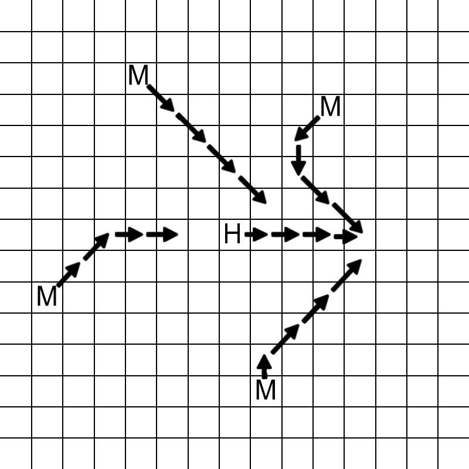

在2011年ACM-ICPC World Finals上的一次游览中，你碰到了一个埃及古墓。
不幸的是，你打开了坟墓之后，才发现这是一个坏主意：突然之间，原本空无一物的沙漠上已经爬满了暴躁的木乃伊。（如果你也沉睡几千年而突然被惊醒，你也会变得如此暴躁的。）（幸运的是，当你做完这道题的时候，你醒来了，发现你在弗罗里达的酒店里。那些木乃伊只是一场梦。）
面对这一大堆疯狂的木乃伊，你唯一的机会就是试图在他们抓到你之前逃跑。问题是：假如你与木乃伊永不疲倦，那么经过多长时间你会被木乃伊抓到？
我们把沙漠看成一个正方形的网格，你与木乃伊轮流移动（你走出第一步）。轮到你时，你可以移动到相邻的8个格子之一，或者站着不动。轮到木乃伊时，每个木乃伊会移动到其相邻的格子之一，使得他与你的欧几里得距离尽量小（假设你与木乃伊都站在格子的中心位置）。允许多个木乃伊同时占据同一个格子。
在每个单位时间内，你先做出移动，然后木乃伊做出移动。如果你与任何一个木乃伊站在同一位置，你会被抓住。当然，你试图尽量长时间避免被抓住。经过多少单位时间你会被抓住呢？
下图描述了你被4个木乃伊追逐的例子。H代表你的初始位置，而M代表木乃伊的初始位置。以你的初始位置为原点，则经过4个单位时间后，你被初始位置为(3,4)的木乃伊抓住。
